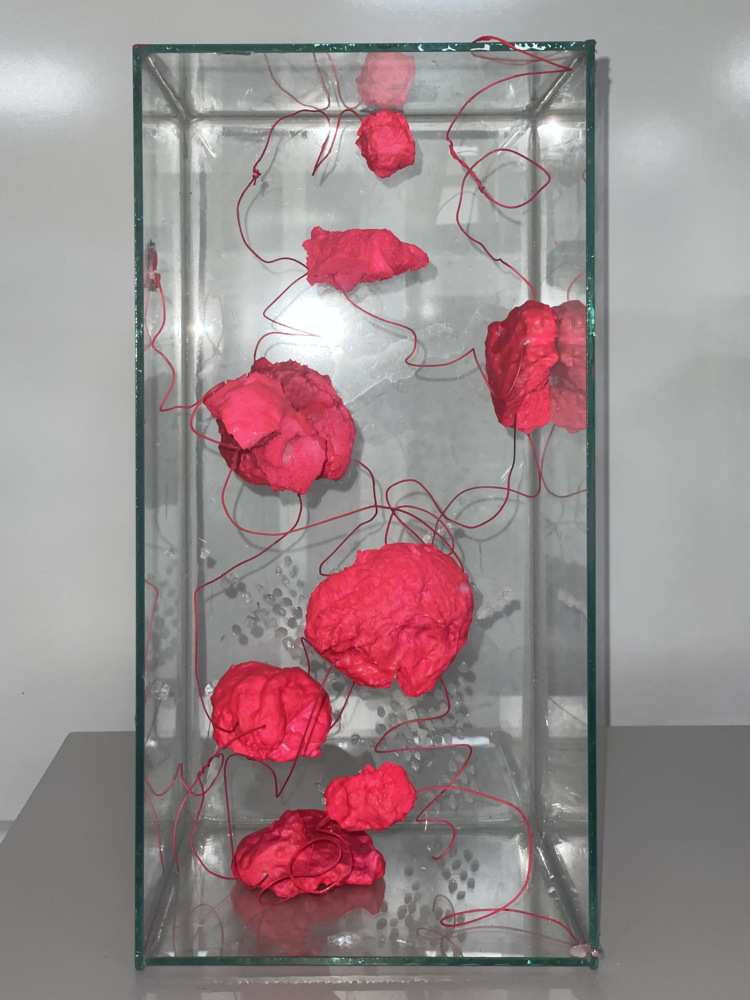
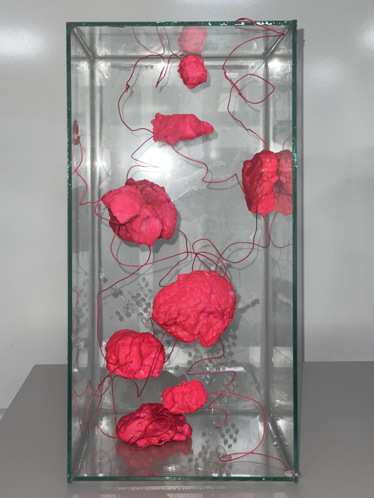
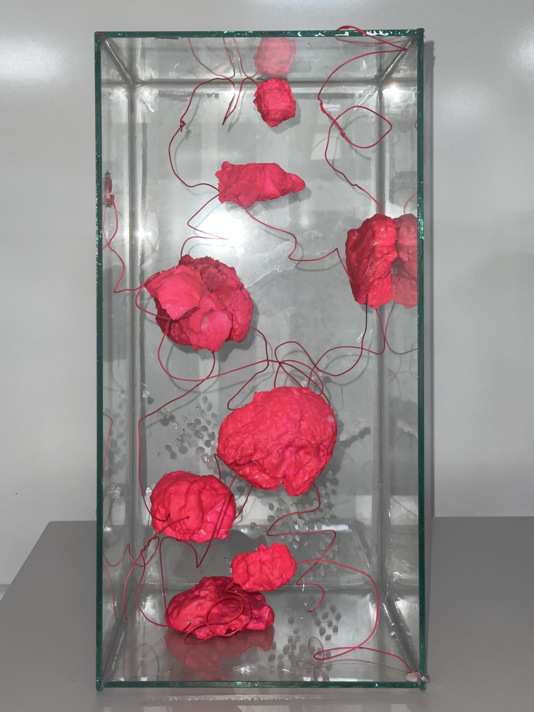

In the video are presented two prototypes for the CO2 sensor inspired by a blooming flower. Both models were made with an Arduino microcontroller. The prototypes are sustainable, made from cardboard and reused plastic
LV 2023
In my project I’m investigating the question of human deprivation of nature and how we are finding ways of reflecting nature back to us. I pursue the idea of creating artificial organisms as a symbol of marriage between technology and nature. I emphasise on tactile materials that mimic organic forms and shapes, studying the science of biomimicry

In the video are presented two prototypes for the CO2 sensor inspired by a blooming flower. Both models were made with an Arduino microcontroller. The prototypes are sustainable, made from cardboard and reused plastic
LV 2023